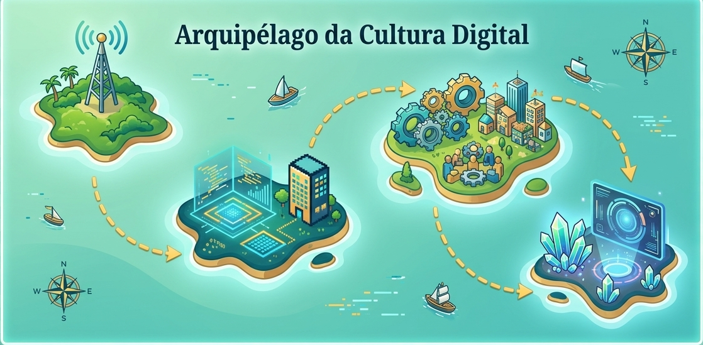

📡
1
1. Saberes Digitais
💻
2
2. BNCC Computação
⚙️
3
3. Metodologias Ativas
🤖
4
4. Criador Cibercultural & IAG
💡 Dica: Clique sobre os pontos numerados de cada ilha para navegar e realizar as missões pedagógicas.
GitHub Pages Ready · H5P Embed Standard